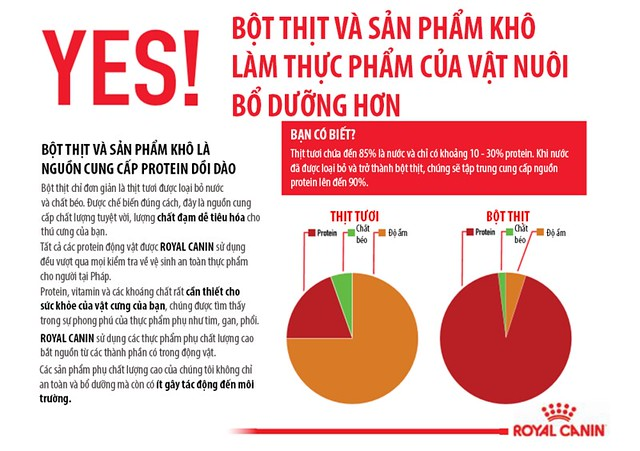
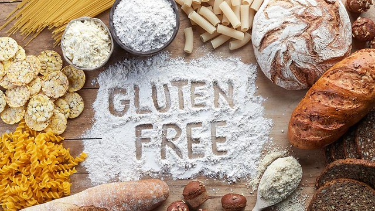

Nhu cầu dinh dưỡng của chó và mèo theo khoa học
Cũng như những động vật khác, chó và mèo cần có thức ăn để sống và duy trì sức khỏe. Những chất dinh
dưỡng mà cơ thể động vật đòi hỏi nhưng cơ thể không tự tổng hợp được thì gọi là chất dinh dưỡng thiết
yếu và phải được cung cấp từ thức ăn.
Để hiểu rõ hơn về chế độ dinh dưỡng đúng cho chó mèo, chủ vật nuôi cần nắm rõ một số kiến thức cơ
bản.
Dưới đây là các kiến thức về dinh dưỡng được Petty tổng hợp từ những nghiên cứu khoa học của các bác
sĩ thú y uy tín hàng đầu thế giới. Xin mời các bạn tìm hiểu và cùng nhau chia sẻ.
Chế độ ăn sống (Biologically Appropriate Raw Food hoặc Bones and Raw Food - BARF)
Mặc dù cách cho chó mèo ăn sống được nhiều người truyền tai nhau, nhưng chúng cũng mang lại những rủi ro
đã được nghiên cứu chứng minh 3 rủi ro chính liên quan đến chế độ ăn sống chưa qua chế biến bao gồm:
- Thiếu dinh dưỡng - nhiều kiểu ăn sống gây ra sự mất cân bằng và có thể làm thiếu hụt hoặc dư
thừa nhiều dưỡng chất. Điều này không chỉ hoàn toàn đúng với chế độ ăn sống tự chế biến ở nhà mà còn
chính xác đối với một số thực phẩm sống đóng gói sẵn được bán ngoài thị trường với nhãn dán ghi rõ
"tránh ăn liên tục hoặc chỉ dùng làm thực phẩm bổ sung."
- Nguy cơ tắt nghẽn đường ruột và / hoặc mục xương, ảnh hưởng nghiêm trọng đến sức khỏe lâu dài.
- An toàn vệ sinh thực phẩm - đã có nhiều nghiên cứu nói về nguy cơ nhiễm khuẩn hoặc nhiễm trùng
từ các
thực phẩm tươi sống bao gồm cả chế độ ăn sống tự chế biến và các sản phẩm đóng gói thương mại. Cả
hai đều có
nguy cơ chứa các sinh vật gây bệnh như Salmonella, E. coli và Campylobacter. Mèo và chó có thể mang
Salmonella mà không bị bệnh nên rất khó nhận biết cho đến khi nó lây sang người, vì vậy chủ vật nuôi
có thể
không biết rằng chó hoặc mèo của họ có bị nhiễm hay không. Trong khi tác hại lớn nhất chủ yếu ảnh
hưởng đến
phụ nữ mang thai, trẻ em và các cá nhân suy giảm hệ miễn dịch.
Thức ăn thực và bột thịt chiết xuất từ thực phẩm

Hình ảnh: Hiện tại chưa có chứng minh khoa
học nào khẳng định
chó mèo dị ứng với ngũ cốc
Bột thịt từ thịt gia cầm hoặc cá là một nguồn đạm protein được chiết xuất theo các quy tắc và tiêu chuẩn
nghiêm ngặt. Ví dụ, bột từ thịt gà chính là thịt gà nguyên chất đã được loại bỏ thành phần nước và chất
béo. Thuật ngữ "bột" (meal) ý nói rằng gà ở đây được chiết xuất từ thịt gà và sấy khô để
loại bỏ
chất
béo và nước trước khi được dùng làm nguyên liệu chế biến thực phẩm cho chó mèo.
Phương pháp chế biến này có lợi cho việc sản xuất hạt khô cho chó mèo nên được ROYAL CANIN nghiên cứu áp
dụng trên thực phẩn dành cho thú cưng của mình. Chất lượng của “bột” làm nguyên liệu sẽ tùy thuộc
vào
chất lượng của nguồn protein.
Chế độ sử dụng bắp (ngô) làm chất độn (filler)
Bắp thường bị xem thường khi được sử dụng làm “chất độn” trong thực phẩm dành cho chó mèo và thú
cưng. Để
biết đúng sai, chúng ta cần xem lại định nghĩa căn bản nhất về “chất độn”. Theo định nghĩa, chất
độn
trong thực phẩm dinh dưỡng là thành phần có ít hoặc không có giá trị dinh dưỡng nhưng cần có nó để tạo
ra phân.
Tuy nhiên, thực tế
bắp có chứa nhiều chất dinh dưỡng quan trọng như: đạm (protein), đường bột
(carbohydrate), axit béo thiết yếu, vitamin và khoáng chất
. Gluten bắp và chất đạm từ bắp rất dễ tiêu
hóa khi được nghiền thành bột và nấu chín. Đó là nguồn amino axit cực tốt bao gồm methionine, cystine và
axit linoleic quan trọng cho da và lông khỏe mạnh cũng như vitamin A, niacin và các chất chống oxy hóa
như vitamin E và beta carotene.
Nếu ai đó lo ngại rằng bắp (ngô) gây dị ứng cho thú cưng của họ thì thực tế là, dị ứng do thực phẩm ước
tính chỉ chiếm khoảng 10% nguyên nhân gây tình trạng dị ứng da ở chó mèo. Trong đó, thịt gà, bò, cá,
thịt cừu, bơ sữa và trứng (tự chế biến hoặc chưa qua chế biến) mới là những tác nhân chính, bắp chỉ
chiếm 5% trường hợp dị ứng thực phẩm.
Chế độ ăn không ngũ cốc (Grain free)
Ngũ cốc là nguồn thực phẩm dinh dưỡng quan trọng cho chó mèo bao gồm các axit amin, axit béo, vitamin,
khoáng chất và chất xơ. Chọn thực phẩm cho chó mèo có thể dùng một hoặc nhiều loại ngũ cốc như gạo, lúa
mì, bắp (ngô), lúa mạch và yến mạch. Một số loại ngũ cốc có thể khó tiêu hóa khi chưa được nấu chín,
nhưng hầu hết chúng được xử lý đúng cách có khả năng tiêu hóa cao hơn các thực phẩm cho chó mèo khác rất
nhiều.
Các loại thực phẩm cho chó mèo được quảng cáo là "không chứa ngũ cốc" thì thường chứa tinh
bột và
các
chất xơ được lấy từ các thành phần như khoai tây, đậu hoặc khoai mì và các thực phẩm này đều không phải
là loại ít thành phần tinh bột. Các nghiên cứu đã chỉ ra rằng, có ít hơn 1% số chó và mèo nhạy cảm với
ngũ cốc.
Tóm lại, nếu bạn lo sợ chó mèo nhà mình mắc phải dị ứng thực phẩm thì chế độ ăn không ngũ cốc này không
phải là giải pháp đúng đắn.
Hiện tại chưa có chứng minh khoa học nào khẳng định chó mèo dị ứng với ngũ
cốc.
Chế độ ăn không Gluten (Gluten free)

Hình ảnh: Gluten từ lúa mì còn được sử dụng
nhiều hơn vì khả năng giúp hệ tiêu hóa hoạt
động tốt và giàu chất đạm ̣(protein)
Gluten là phần chất đạm (protein) trong ngũ cốc nguyên hạt như lúa mì, đại mạch và lúa mạch đen khi tinh
bột đã được loại bỏ và Gluten là thứ giúp cho bột có tính đàn hồi. Ngoài dòng chó Irish Setters nhạy cảm
với chất Gluten này thì hiện tại chưa có thêm bất kì phát hiện chính thức nào từ các nhà khoa học. Không
những vậy, Gluten từ lúa mì còn được sử dụng nhiều hơn vì khả năng giúp hệ tiêu hóa hoạt động tốt và
giàu chất đạm ̣(protein).
Chế độ ăn hữu cơ (Organic)
Thuật ngữ "hữu cơ" nói đến các phương pháp được sử dụng để trồng cây và chăn nuôi gia súc. Tổ chức
USDA
National Organic Program Standards liệt kê một số hướng dẫn về các sản phẩm hữu cơ như sau: cây trồng
hữu cơ là cây không dùng phân bón tổng hợp và một số loại thuốc trừ sâu.
Hiện tại chưa có tiêu chuẩn đối với thực phẩm hữu cơ cho chó mèo và cũng không có loại nào được giám sát
chính thức trên thị trường. Do đó, các công ty thực phẩm cho chó mèo sử dụng từ "hữu cơ" để mô tả
sản
phẩm có thể (hoặc không) tuân thủ các tiêu chuẩn tương tự được áp dụng đối với thực phẩm hữu cơ của con
người.
Thực phẩm hữu cơ cho chó mèo không hẳn chứa nhiều chất dinh dưỡng hơn thực phẩm thông thường. Khi đánh
giá thực phẩm hữu cơ cho chó mèo, bao bì đóng gói nên được kiểm tra cẩn thận để xem liệu tất cả các
thành phần hay chỉ một số được dán nhãn "hữu cơ".
Quan trọng hơn cả là người tiêu dùng cần xác nhận liệu thành phần và sản phẩm có được sàng lọc các hóa
chất gây hại hay chưa.
Thực phẩm tự nhiên cho chó mèo (Natural)
Chủ sở hữu chó mèo có thể không chắc chắn thuật ngữ "tự nhiên" có nghĩa là gì mặc dù nó có
vẻ mô tả một sản phẩm an toàn, khỏe mạnh và đầy dinh dưỡng. Một cuộc khảo sát gần đây cho thấy
68%
tất
cả thực phẩm cho chó và 42% của tất cả thực phẩm dinh dưỡng dành cho mèo đều liên quan đến
sản
phẩm được
dán nhãn là "tự nhiên".
Hầu hết các công ty thực phẩm thú cưng đều tuân thủ các nguyên tắc quy định trong đó không có thành phần
tổng hợp về mặt hóa học nào ngoại trừ các vitamin, khoáng chất, hoặc các chất dinh dưỡng khác.
Nói chung, thực phẩm cho chó mèo tự nhiên không nên chứa phẩm màu nhân tạo, hương vị nhân tạo hoặc chất
bảo
quản nhân tạo. Tuy nhiên, hầu như mọi sản phẩm tự nhiên đều chứa vitamin tổng hợp và các chất dinh dưỡng
khác được chế biến theo phương pháp hóa học.
Tất cả các chất phụ gia được sử dụng trong thực phẩm dinh dưỡng cho mèo và chó, dù là tự nhiên hay tổng
hợp,
đều cần phải được xác nhận an toàn.
Hầu hết các nhà khoa học và bác sĩ thú y đều không lo lắng về chất phụ gia tổng hợp vì không có chất nào
trong số chúng được chứng minh là gây hại. Chủ vật nuôi chó mèo nên ghi nhớ rằng, "tự nhiên" không có
nghĩa
là an toàn hơn, khỏe mạnh hơn hay bổ dưỡng hơn.